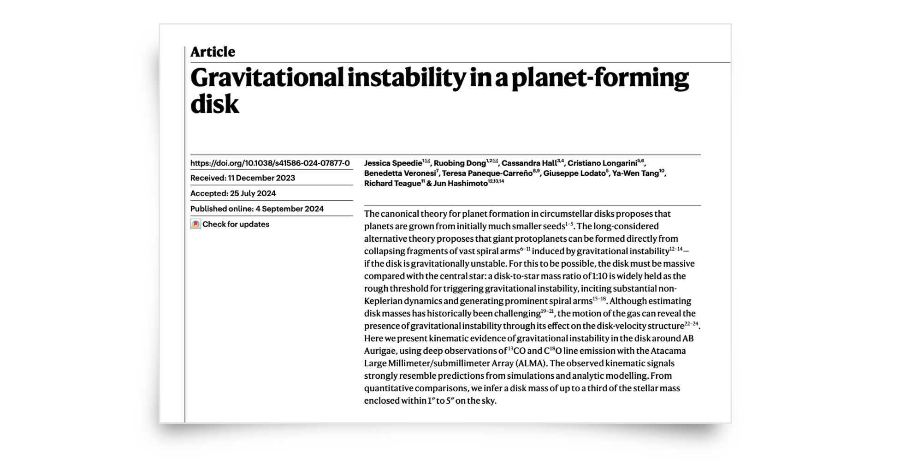
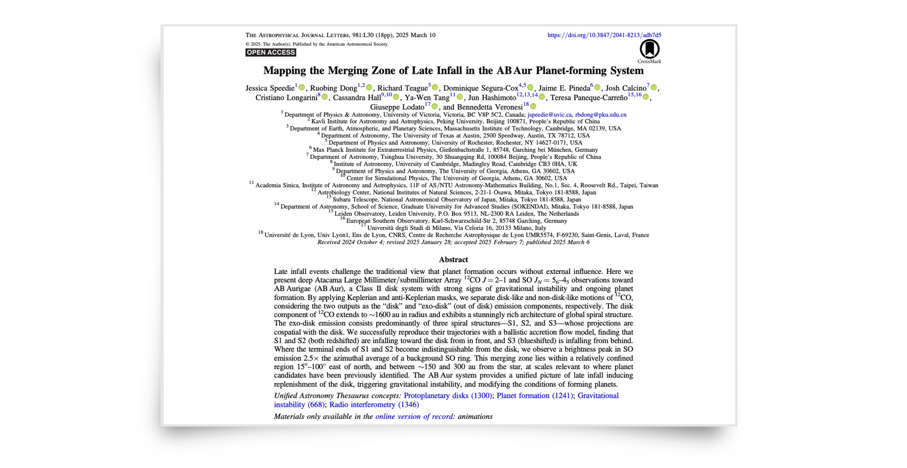

Now on to the science!#

13CO and C13O line observations (paper 1). Speedie et al. 2024

12CO and SO line observations (paper 2). Speedie et al. 2025
Download the data products#
Sincere and special thanks go to Ryan Loomis, Sarah Wood and Tristan Ashton at the North American ALMA Science Center (NAASC) for providing science support and technical guidance on this ALMA data as part of a Data Reduction Visit to the NAASC, which was funded by the NAASC. The reduction and imaging of the ALMA data was performed on NAASC computing facilities.
Comments and corrections are much appreciated (especially if you are a student!). Get in touch: jspeedie@uvic.ca.